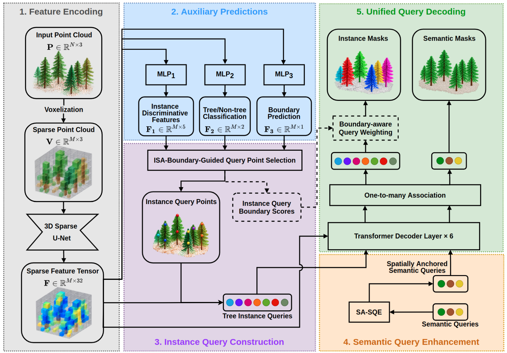
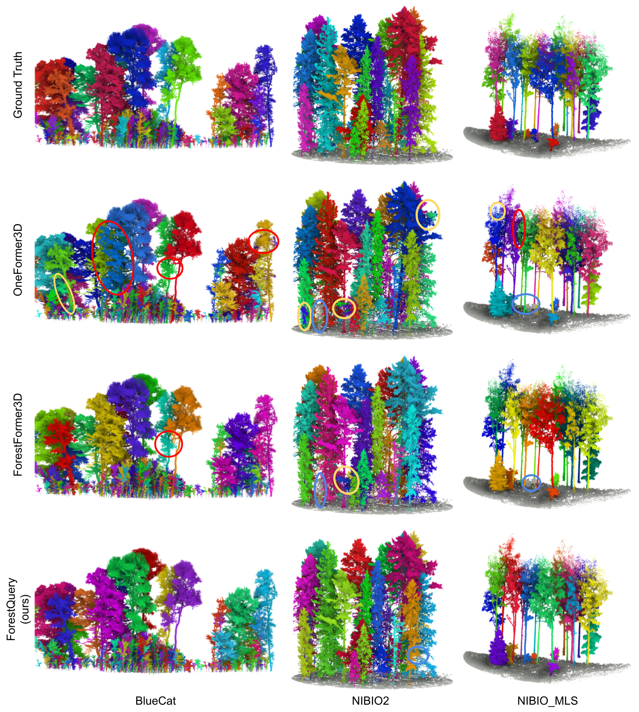
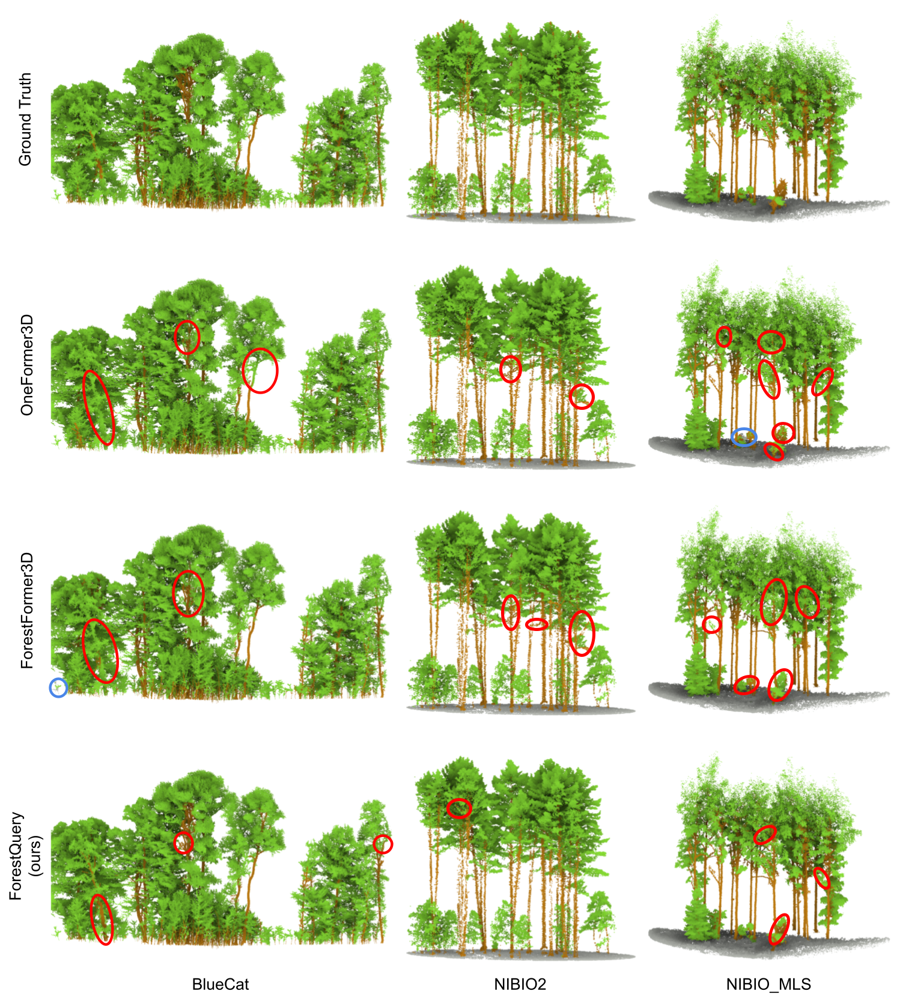

Forest point cloud segmentation is fundamental for fine-grained 3D forest scene understanding, yet remains challenging due to irregular tree structures, severe occlusions, density variations, and ambiguous instance boundaries. Recent query-based forest segmentation methods have shown promise for unified semantic and instance prediction, but they still insufficiently exploit forest-specific spatial structure and account for boundary uncertainty. In this paper, we propose ForestQuery, a boundary-aware and spatially anchored query learning framework for unified forest point cloud segmentation. ForestQuery enhances instance and semantic query learning through two complementary designs. Specifically, boundary uncertainty is explicitly modeled to guide reliable instance query construction and modulate query optimization through adaptive loss reweighting. Meanwhile, spatially anchored semantic query enhancement (SA-SQE) introduces learnable 3D anchors encoding forest vertical stratification priors to enrich semantic queries with explicit spatial references. We evaluate ForestQuery on multiple public forest point cloud benchmarks and a self-collected annotated real-world dataset. Extensive experiments demonstrate consistent improvements in both individual-tree segmentation and semantic segmentation across diverse forest scenes.

Qualitative comparisons on FOR-instanceV2. Click any figure to view it at full resolution.


@misc{zhan2026forestqueryboundaryawarespatiallyanchored,
title={ForestQuery: Boundary-Aware and Spatially Anchored Query Learning for Unified Forest Point Cloud Segmentation},
author={Zhihao Zhan and Le Tao and Yifei Tian and Xin Liu and Jie Yuan},
year={2026},
eprint={2610.03403},
archivePrefix={arXiv},
primaryClass={cs.CV},
url={https://arxiv.org/abs/2610.03403},
}